The Three Roles — Admin, User, Viewer
AMS has exactly three roles. An admin gives each employee a role in Setting → Login Access; the role decides the menu, the start page and what can be changed.
| Role | Menu | Sees | Can change |
|---|---|---|---|
| Admin | Home, Setting | All master data; devices only in their own plant(s) and device types | Adds all the master data in Setting — device types, models, device names, RAM, processor, OS, locations, warranty, IP addresses, servers, products, licences — and who may sign in (Login Access). What the admin adds is what users pick on the user side. |
| User | Home, User Dashboard | Only their own plant(s) and device types | Adds and edits devices, servers and software, picking from the master data the admin added; Bulk Upload |
| Viewer | User Dashboard | Only their own plant(s) and device types | Nothing — view only |
How the roles fit together
For example: the admin adds 16 GB in RAM Master → 16 GB is now in the RAM list on the user’s Add Device form. A new device type, model or device name added by the admin appears there the same way. Anything not in a master cannot be picked — ask the admin to add it first.
Project Flow
How AMS works from login to an assigned device. Read the chart from the top down.
The six reasons
| Reason | Description |
|---|---|
| Open | Open Devices tab |
| User Left | Assigned Devices tab if a new employee is selected; otherwise the Open Devices tab |
| Asset Transferred | Assigned Devices tab, with the new employee |
| Laptop Replaced | Assigned Devices tab, with the new employee |
| User Transferred To Another Plant | Assigned Devices tab, with the new employee. Plant, Department and Location can be changed. |
| Asset Transfer Internally | Assigned Devices tab, with the new employee |
How to Login
You sign in with your employee code. Only employees given access in Login Access can sign in.
- Open AMS in your browser.
- Enter your Employee Code and Password, then press LOGIN.
- You land on your own start page — Setting for an admin, the User Dashboard for a user or viewer.
After login — Admin
An Admin lands on Setting: one tile for every master. Click a tile to open that master.
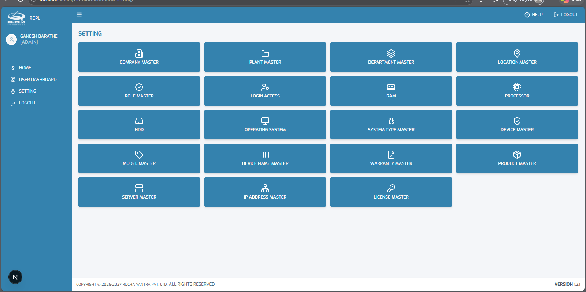
The Admin page — master data
- The Admin page holds all the master data — device types, models, device names, RAM, processors, operating systems, plants, locations, warranty, IP addresses, servers, products and licenses.
- Only what the admin adds here is shown on the user side. For example, a RAM size added in RAM Master appears in the RAM list of the user’s Add Device form.
- If a value is missing from a list on the user side, ask the admin to add it to the correct master first.
After login — User
A User lands on the User Dashboard, which has four cards: Add Device, Server, Software and Bulk Upload. Click a card to open that page.
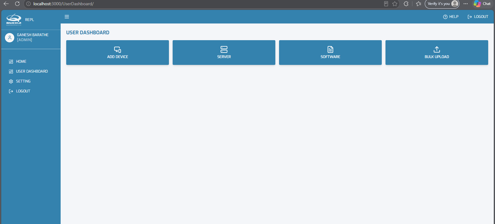
The User Dashboard
Four cards — each opens its own page.
| Card | What it is for |
|---|---|
| Add Device | Every device type in Device Master — Desktop, Laptop, Printer, Tablet and any type added later. |
| Server | Add and list servers. |
| Software | Add and list software licences. |
| Bulk Upload | Add (or update) many devices, servers or software at once from an Excel sheet. |
Add Device — Step by Step
Clicking the Add Device card on the User Dashboard opens the Add Device page, which has these four options:
- Add Device — opens a blank form to add a new device.
- Open Devices — devices that have been added but are not yet assigned to any employee.
- Assigned Devices — devices that are assigned to a particular employee (a printer is assigned to its department).
- Total Devices — the count of all devices, open and assigned together (Open + Assigned = Total).
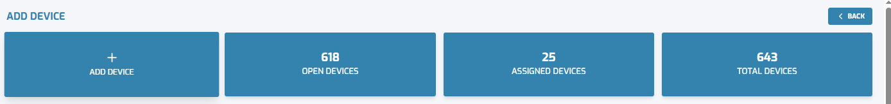
Device count by type
Clicking Open Devices, Assigned Devices or Total Devices opens its list. Below the cards there is one tab for each device type — Desktop, Laptop, Printer and Tablet — and the number on each tab shows how many devices of that type are in the list. Click a tab to see only that type.
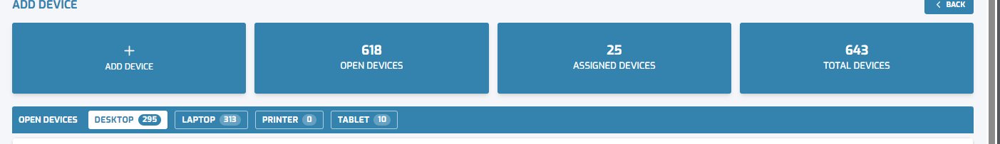
Two ways to add a device
- From Open Devices — when the admin adds a device name in Device Name Master, that device appears in Open Devices under its type. Click its Reference No to open the Add Device form. The Device Type, Model and Device Name are already filled in.
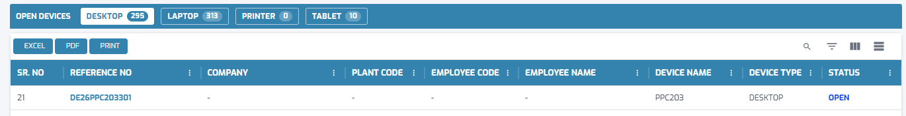
Click the Reference No (for example, DE26PPC203301) to open the Add Device form for that device. - From the Add Device card — click Add Device to open a blank form, then choose the Device Type and Model. The Device Name list shows the device names that are already added, as well as the device names that are open.
Server
Two cards: Add Server and List Server. The page opens on the list.
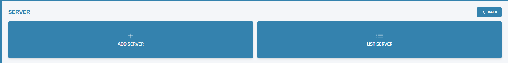
- Press Add Server. Server Name * comes from Server Master — only servers not added yet are listed.
- Fill in the server information. Once the server information is added, the server appears in List Server.
- Press SUBMIT — “Server added successfully”. Total Warranty is worked out from the two dates.
- In List Server, click a server's name to view it; EDIT to change it.
Software
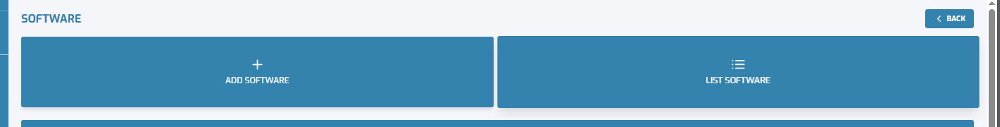
Two cards: Add Software and List Software.
- Press Add Software. Product Name * comes from Product Master.
- Fill Total Licenses Acquired, License Excess or Deficiency (may be negative), License Type (from License Master), Renewal Date and Status.
- Press SUBMIT — “Software added successfully”. The same product may be added more than once.
- Once the software is added, it appears in List Software.
Bulk Upload — Many at Once from Excel
Pick Device, Server or Software, download its Excel template, fill it, and upload it.
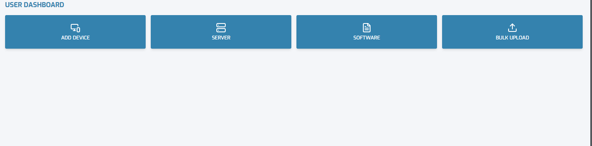
When you click Bulk Upload, the following page opens:
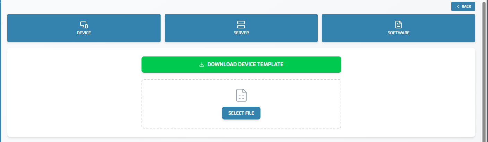
- As shown in the image above, click Download Template. The template is downloaded to your system.
- Fill in the required details in the template and save it.
- Click Select File and upload the saved file.
What happens to each row
| Row in the sheet | Result |
|---|---|
| A new device | Added |
| Already added, nothing changed | Skipped — not added twice |
| Already added, some values changed | Updated — the popup lists each change from → to; recorded in the device's User Log |
| Already added, a cell left empty | The saved value is kept — an empty cell never erases anything |
| A mandatory cell empty, or a wrong value | Needs fixing — listed with the reason; the other rows still upload |
| The same device name twice in the sheet | Only the first is kept |
| Exactly the same sheet uploaded again | Refused — “Already uploaded” with when and by whom |
The template
- * in a heading = mandatory for that device type.
- Grey columns (Reference No, Company, Total Warranty, Age) fill in by themselves; typing there is refused with a message saying where the value comes from.
- Device Type → Model → Device Name, Plant → Department / Location, and the master columns are dropdowns.
- Dates as
DD/MM/YYYY. Code columns take only what the form takes (see Add Device). - Do not rename the headings — the upload finds each column by its heading.
User Left — Release an Assigned Device
Use this when a device is assigned to a user and that user resigns or leaves.
- Go to Add Device → Assigned Devices and click that particular device.
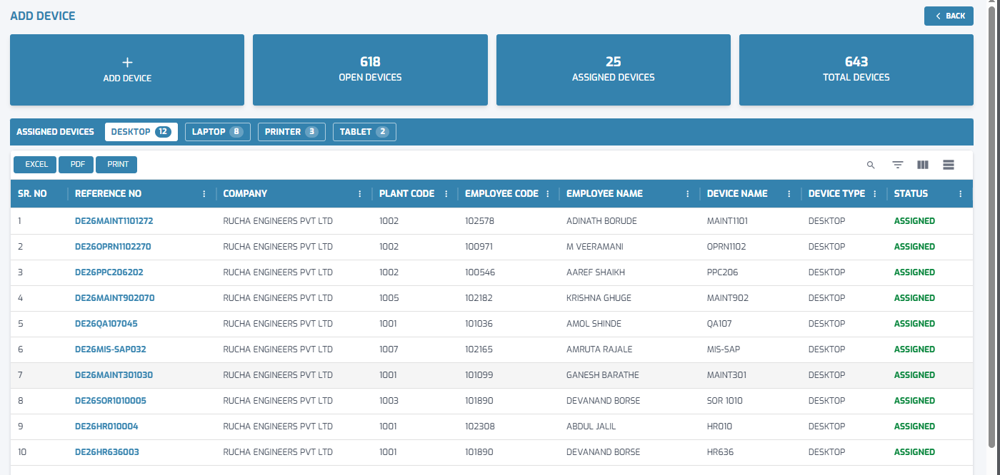
Assigned Devices — click the device to open it. - In Action History, the current user is shown. Enter the Release Date and select the Reason.
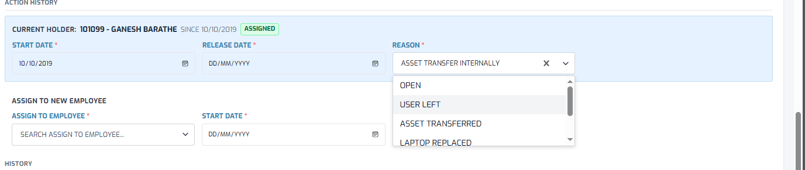
Action History — Release Date and Reason for the current user. - In the Reason list, select User Left.
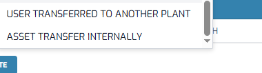
The Reason list. - If a new employee has been hired in place of that user, select the employee in Assign To Employee and enter the Start Date. The device is assigned to the new employee.
- If no user is assigned, leave Assign To Employee empty. The device then goes to Open, and you can see it in the Open Devices tab.
- When the employee is hired later, open the device from the Open Devices tab and assign it then.
Working with Tables and Exports
| Control | What it does |
|---|---|
| Search (magnifier) | Finds rows containing what you type, in any column. |
| Filter | Shows a filter box under each heading. |
| Columns | Hide or show columns. |
| Density | Compact or roomy rows. |
| Full screen | The table alone, filling the screen. |
| EXCEL / PDF / PRINT | The rows as filtered now, in the register's own layout. |